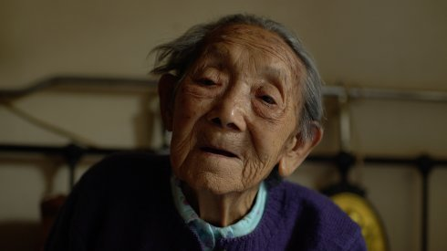

Dead Souls

Wang Bing
|
FR/CH 2018 469 min – HD – MandarinB: Wang Bing – K: Wang Bing, Xiaohui Shan, Yang Song, Liu Xianhui – S: Catherine Rascon – T: Wang Bing, Raphaël Girardot, Adrien Kessler – P: Les Films d’Ici – V: Doc & Film International
|
sonntag 14 okt 11.00 kunstverein
münchen
Im Nordwesten Chinas, am Rande der Badain Jaran Wüste, gab es zur
Zeit der Kulturrevolution ein tödliches Umerziehungslager für
Angehöriger der Intelligentija, die von der kommunistischen
Parteikaste als „ultra-rechte“ Systemfeinde klassifiziert wurden.
Von den 3000 Gefangenen, die von 1957 bis zur mit Skandalen
einhergehenden Schließung des Lagers 1961 inhaftiert waren,
überlebten nur 500 den menschenverachtenden Lageralltag, die
meisten verhungerten.
DEAD SOULS lädt uns ein, die wenigen Überlebenden der Lager zu
treffen; der Film besteht ausschließlich aus den erschütternden
Erzählungen der Zeitzeugen, die zu Beginn der Gespräche oft
bereits über 90 Jahre alt waren und mittlerweile meist verstorben
sind. In ihren Worten und Gesichtern entsteht über acht Stunden
hinweg ein monumentales filmisches Mahnmal.
Die Zeugenberichte folgen wie in einer Serie aufeinander, der Film
kann in Ausschnitten gesehen werden.
Wang Bing geb. 1967 in Xi’an, China. Er studierte bis 1996 an der Filmakademie in Peking. Mit seiner dreiteiligen Langzeitdokumentation „Tie Xi Qu/Tiexi District: West of the Tracks” sorgte er 2003 auf internationalen Festivals für Aufsehen. Wang Bing lebt heute aufgrund der schwierigen Produktionsbedingungen in Paris. |
| Filme Tie Xi Qu (Tiexi District: West of the Tracks) 2003 – He Fengming (Fengming, a Chinese Memoir) 2007 (3. UX) – L'argent du charbon (Coal Money) 2008 (4. UX) – Cai you ri ji (Crude Oil) 2008 (4. UX) – ’Til Madness Do Us Part 2013 (9. UX) – Ta'ang 2016 (11. UX) – Mrs. Fang 2017 – 15 Hours 2017 – Dead Souls 2018 |